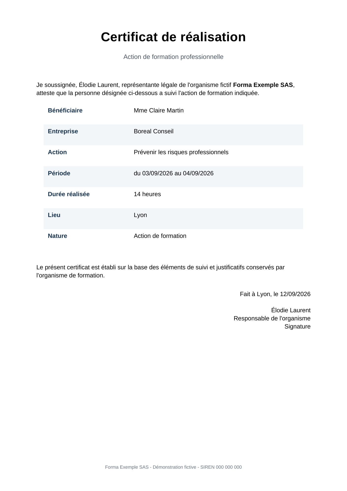

Automatisation documentaire · Organismes de formation
Votre fichier Excel.
Tous les certificats.
Une automatisation sur mesure qui transforme votre tableau de suivi en documents Word et PDF nommés, classés et prêts à envoyer.
Forfait fixe : 490 € HT · Livraison en 7 jours
SESSION_09.XLSX
LEÏLA MARTIN
01GÉNÉRER
Leïla Martin
Formation Excel avancé
14 heures · 12 septembre 2026
signé
UNE LIGNE → UN WORD + UN PDF
Le vrai problème n’est pas de créer un certificat.
C’est de répéter l’opération 68 fois, sans faute de frappe et sans oublier personne.
01
La méthode
Vous gardez votre tableau
Participants, dates, intitulés, durées : nous adaptons l’automatisation à vos colonnes existantes.
Votre modèle devient dynamique
Logo, mise en page et mentions restent les vôtres. Seules les données variables sont injectées.
Vous cliquez, tout est produit
Un Word modifiable et un PDF final par participant, avec une convention de nommage propre.

02
Le livrable
Pas une démo.
Votre outil, chez vous.
- Le générateur configuré pour votre organisation
- Votre modèle Word rendu automatique
- Un fichier Excel de saisie propre
- Une vidéo de prise en main
- 7 jours de corrections après livraison
03
Périmètre clair
Inclus
1 modèle de certificat
1 source Excel
Word + PDF
Jusqu’à 250 documents par lot
Installation et prise en main
Pas dans ce forfait
Refonte de votre processus Qualiopi
Signature électronique qualifiée
Connexion à votre CRM
Archivage légal externalisé
Maintenance illimitée
Un forfait. Un résultat.
La prochaine fin de session peut être la dernière faite à la main.
Installation complète
490 € HTPaiement uniquePrésenter mon besoin →04
Questions utiles
Dois-je changer de logiciel ? +
Non. L’outil part de votre environnement actuel : Excel, Word et vos dossiers habituels.
Mes données partent-elles en ligne ? +
Non dans la configuration standard. La génération s’exécute localement sur votre poste.
Est-ce une garantie de conformité Qualiopi ? +
Non. L’outil automatise vos documents et vos contrôles convenus. Vous restez responsable de leur validation.
Et si mon modèle change ? +
Une adaptation ponctuelle peut être chiffrée. Le code livré reste accessible et documenté.